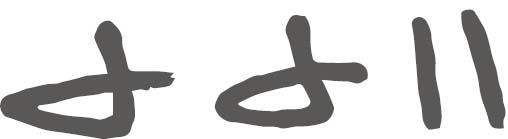

你觉得有没有必要数一数自己的孩子，以便确定他们是真实存在的？应该没有必要吧。同样，人类社会早期的采猎者没有大型项目或商业活动的概念，对于他们来说，数字几乎没有任何意义。但是，随着人类定居下来并开始从事贸易活动，计数和记录结果的能力变得重要起来。首先，我们可以采用阿尔伯特·爱因斯坦的方式，通过思想实验的形式来理解这个问题。假设数字还没有出现，而我们的任务是发明这些数字。我们并不确定历史上数字是如何被创造出来的，但可以推测出这个历史过程的大概情况。
我们从计数开始。我们生活在一个高度重视数字的世界之中，因此，如果有人告诉你，计数其实并不一定需要有数字，你也许会觉得这个说法荒谬可笑。但是，事实确实如此。在研究集合论和无穷大时，我们就会遇到这种情况，因为我们经常会见到可数无穷大和不可数无穷大这样的概念，尽管两者都不指数字。我们暂且不考虑这些复杂的概念，而是集中精力了解做记号的计数方式为什么不需要借助数字。
假设我是一名史前农民，我生活的社会没有数字。邻居向我借山羊，我答应了他。（我不知道邻居为什么要借山羊，我对山羊以及史前农民也不甚了解。）我和邻居是朋友关系，我很信任他，但在朋友归还山羊时，我仍然希望找到一个办法，可以确定他如数将山羊还给了我。因此，我把手掌张开，五指伸直。在邻居从我的羊圈里赶出第一头羊时，我把小拇指收回到手心的位置。（小拇指弯曲时，无名指往往会随着小拇指一起弯曲，因此你可能需要用另一只手协助小拇指。掰手指是一种比较低级的计数方式，但是十分方便。）第二头羊离开羊圈时，我收回无名指。就这样，当第五头羊被赶出羊圈时，我把大拇指收回来，横扣在其他手指上面。这时候，邻居觉得羊已经够了。
几周之后，他来还山羊。当这些山羊被赶入羊圈时，我通过同样的方法，统计了山羊的数量。最终的结果一样，我知道借出去的山羊已悉数归还。（严格地说，我不知道还回来的这些山羊是不是我借出去的那些，但在这里我们不考虑这个问题。）当时，我不知道我借出了多少头山羊（我没有“多少”的概念，也没有数字的概念），但是我知道邻居没有欺骗我。事实证明，计数是一种非常有用的工具，可以帮助我们解决身边的问题。
有证据表明，古时候，人们在采用这种计数方法时使用的工具是符木。已知最早的符木是一根有刻痕的骨头，称作伊尚戈骨，可以追溯至20 000年前。这块狒狒的腓骨（小胫骨）上刻有三组深深的刻痕，每组的和分别是60、48和60。这些符木很可能就是计数用的。它们不仅可以表示更大的数，而且计数结果可以长时间保存，因此是一种优于掰手指的计数工具。
我们只能推测伊尚戈骨是用来计数的，但是无法找到背景资料加以确认。那些刻痕也可能是一种装饰。但我们可以确定，在距今更近的史前时代，人们使用了大量的符木标记，而且这些标记显然是用于记录的。我们可能永远无法确定符木这种无数字计数工具第一次出现的时间，但我们知道把符木作为一种常用的计数工具已经有漫长的历史了。然而，我们设想的发明数字的实验才刚刚开始，它远不像制作一根符木那样简单。
接下来，我们设想，在把山羊借给邻居后的第二天，我女儿问我哪些山羊被借走了。但我已不记得朋友借的是哪些山羊（一段时间之后，所有山羊在我的脑海里都变成一模一样的了）。于是，我一面说“就是……”，一面掰起手指头。这已经是我能找到的最有效的记录方式了。若干天之后（在这期间，邻居又找我借了几次山羊，看来他有向邻居借东西的习惯），我突然灵光一现。每次说到借给邻居的那些山羊时，我为什么都要重复掰手指这个无聊的动作呢？只要说“一只手的山羊”，不就可以了吗？如果他需要多借一头山羊，那我怎么表示呢？“一只手加一根手指的山羊”。于是，我不知不觉就发明了数字。由于这些数字都是根据我的手指发明的，因此它们可以叫作“手指数”。
不幸的是，史前版的我有点儿上年纪了，记忆力也衰退了。在一段时期里，由于邻居借羊的频率异常高，所以我需要通过在符木上刻痕的方式，帮助自己记住借出去了多少头羊。然而，我发现，既然“手”这个词可以用来表示一定数量的手指或者符木刻痕，那么，如果我用某个特定的刻痕或者图案来表示手，计数结果不就一目了然了吗？那样的话，我就不需要将很多刻痕转化成若干只手了。刚开始的时候，我把符木刻痕画成手指的样子：
但是，过了一阵子之后，因为懒惰，我把这个刻痕做了简化处理，用一条横线表示大拇指，用一条竖线表示其他手指，于是这个图案就变成了一个不规则图形：
在书写和惰性的双重作用下，这些数字逐渐形成了一套独有的符号体系。这套数字系统简单易懂，即使你之前从未使用过，也从未见过，看到下面的符号之后，你也应该能立刻说出这个数是多少：

没错，这个数就是现代数字系统中的12。然而，现在讨论这个数还为时过早。在史前人眼中，这个数就是“手—手—手指—手指”。但也有可能是“手指—手指—手，手指—手指”，这是因为我可以利用左手的手指数出这个数包含多少只手，还可以利用右手数出余下的手指数。太棒了！我是不是已经成为一名数学高手了？暂且还算不上。但是，我已经是一名算术师了，如果真有“算术师”这个词的话。（但好像真的有这个词，因为电脑的拼写检查程序没有报错。）的确，这些内容太简单了，可能还不足以称为数学吧。但是，在讨论更复杂的情况之前，我们先看一看，到现在为止，我们到底掌握了哪些技能。
我发明的这种符号系统是用数字表示实物，也就是说，这些数字是对现实世界中具体事物的直观表示。具体地说，在本例中，这些数字表示的是山羊的数量。对于现代人而言，既然这些直观的符号可以表示山羊，就一定可以表示玉米等其他事物。但是，我们知道，早期的准数学家在历经了一番周折之后，才艰难地完成了这个由具体到抽象的飞跃过程。事实上，数字的通用性（指数字与实物剥离，变成独立的符号。正因为数字的这个特性，我们现在不仅可以用“4”表示香肠，还可以用它表示汽车）并不是与生俱来的。
就像数山羊这个思想实验一样，古时的乌鲁克城邦居民在学会书写之后，也经常需要考虑计数的问题。乌鲁克是最早的城市之一，在伊拉克还能看到该城遗址。公元前4000年，乌鲁克在苏美尔文明中占据核心地位，存世2 000多年。但是，乌鲁克的居民没有发明出可以表示所有事物的数字系统。他们虽然进行了一定程度的归纳，却认为有的事物与其他事物相差甚远，在表示这些事物时需要使用特殊的数字。例如，他们使用一套数字系统表示人、活的动物和干鱼（不要问我为什么），同时使用另一套数字系统表示谷物、奶酪和鲜鱼。
但是，在应用过程中，有人不可避免地会在某些场合中突破限制，用某个事物（比如山羊）独有的计量系统表示其他事物。于是，数字逐渐具有了通用性。我之所以用大量篇幅讨论这个过程，是因为它对于回答“数字是一种真实的存在吗”这个问题具有非常重要的意义。如果事实证明数字并非真实存在，那么为什么它们可以如此好地表示现实呢？对于这个问题，美国数学家理查德·汉明说：
抽象的整数不仅可以用于计数，而且效果非常好，这实在令我吃惊。我曾经试图向朋友们介绍我的这种心情，但是他们几乎都无法理解。6头绵羊加上7头绵羊，就有13头绵羊，6块石头加上7块石头，就有13块石头，这样的结果难道不令人吃惊吗？宇宙间竟然有像数字这样简单的抽象概念，难道不是奇迹吗？我认为，这个事实强有力地证明了数学的神奇性达到了我们难以想象的程度。我认为数学既不可思议，又难以解释。
接着说我们的思想实验。过了一段时间，我可能会调整掰手指这种计数系统，并且使用一些有形的象征物。这些有形的象征物可能是计数石，也就是“calculi”［小卵石，“calculation”（计算）与“calculus”（微积分）即由此演变而来］，也可能是算盘珠，还可能是我们今天仍在使用的硬币。事实上，在发明数字之后不久，我肯定就需要制作出某种有形象征物。从记账这个角度看，我发明的这种书写符号没有任何问题。例如，看了这些符号，我就知道我借给邻居多少头山羊。这种记账方式是可行的，因为邻居和我是朋友，我们彼此信任。但是，如果我是一个不诚信的人，我就可以在符木上添加两条刻痕，而且看不出任何破绽。
邻居来还山羊时，等到数完一只手的山羊之后，我会装出一副很伤心的样子说：“你只还给我一只手的山羊，还有‘手指—手指’的山羊没还呢？”同时，我会把修改过的符木拿给他看，脸上则是无辜又可怜的表情。邻居不能复制我的符木，因此他可能没有办法为自己辩解，他要么多还给我两头山羊，要么把我痛揍一顿。
实际上，到目前为止，用“手指—手指”来表示“2”的计数方式可能已经让我不胜其烦了。因此，富有独创性的我可能会想出一些字词，用来表示介于手指与手之间的数值。经常与文字打交道的人都希望字词简短易记，同样，我也希望这些字词不要太长，所以我最后想出来的字可能是：“芬，戈，纽，喀，手”。于是，我一面适度地做出伤心的表情，一面质疑邻居：“还差戈头山羊呢！”
无论我如何表示剩下的这两头山羊，不经意间，我毫不费力地完成了一种全新的数学运算。在我作弊之后，我的符木显示出山羊的总数是手—戈（实际上，我可能会把这两个字连起来，表示“7”这个数）。邻居还给我一只手的山羊，还欠我戈头山羊。从手—戈头山羊中收回一只手的山羊，还剩下戈头山羊。也就是说，手—戈减去手等于戈。这难道不是一道算术题吗？
因此，如果我不诚信，我就可以借助符木和我新发明的骗术进行骗人的勾当。幸好，聪明的邻居发现，我的符木仅仅通过刻痕表示山羊的数量，而这些刻痕改起来非常方便，因此他有被骗的危险。于是，他拿出了一套具体的象征物，每枚象征物代表一头山羊。这些象征物是他自己制作的实物，易于辨认，而且我难以复制。在他归还山羊时，我收到一头山羊，就还给他一枚象征物。归还了一只手的山羊之后，这些象征物就全部回到了邻居手中，因此我无法欺骗他。但是，新的问题又出现了。由于邻居经常来借山羊，我有点儿不高兴了。因此，我们达成了一个新协议。在邻居再次借山羊时，作为补偿，我可以留下一枚象征物。将来，我可以利用这枚象征物从邻居那里换取某些物品，例如一袋面粉。
由于彼此之间的不信任，再加上非常简单的算术运算，钱在不知不觉之中便诞生了，并且为有偿服务的产生奠定了基础。由此可见，数字的功能强大到令人瞠目结舌的程度。但我们还是从金钱回到纯算术这个话题，继续考虑“手”的含义。刚开始的时候，我可能只会用这个概念来表示羊群的大小，但是，我很快就会发现它的通用性，也就是说，它还可以方便地表示苹果、人、鱼叉等事物的数量。作为一个数字，手可以用于很多方面，它可以告诉我们某种事物到底有多少，无论这种事物是什么。
到目前为止，这就是手的全部功能，而且这些功能已经足够满足我们计数的需要了。坦白地说，这种状况将维持相当长的时间。在清点存货、借钱、购物和销售等活动中，手可以发挥不可思议的显著作用。在准备晚餐时，手可以告诉我们有多少人将与我们共进晚餐。手还可以告诉我们，多少天之后，白天会慢慢变长。正因为如此，当简单的符木演变成书面数字之后，古巴比伦人发明了非常先进的六十进制，这是最早出现的计数系统之一。
“六十进制”是指在60这个位置，所有的数字都要进位到下一级。我们现在使用的十进制数字系统，很有可能源于双手一共有10根手指这个事实。（从技术上看，本章讨论的手数字系统是五进制。）古巴比伦人的这套数字系统是楔形文字，是用尖笔在陶片上刻画出来的。值得注意的是，这是一个出现时间非常早的位置计数系统（某个数字在一排数字中的位置不同，它所表示的值也不同，例如，“1”表示的可能是“1”，也可能是“60”或者“3 600”），直到2 000多年后，位置计数系统才成为一种常见现象。
五进制、十进制和二十进制都比较好理解（考虑二十进制时，我们可以加上脚趾），但是六十进制乍一看似乎比较奇怪。其实，60这个数字使用起来十分灵活，它可以被1、2、3、4、5、6、10、12、15、20和30整除，因此在除法运算中非常方便。大家不要彻底否定六十进制。别忘了，我们在将秒换算成分钟、将分钟换算成小时以及表示角度时，仍然在使用它。古巴比伦人将楔形文字书写在陶片上，因而留下了大量数字，其中有很多是用来记账和管理交易的，但是还有一些数字则是古巴比伦人研究天空时留下来的。我们知道，古巴比伦人对天空进行了深入细致的研究，主要是由于占星术的发展。
我们回过头来接着讨论史前农民这个思想实验。我们创造的数字都是用来代表实物的，如果不用来表示一个真实的物体，这些数字就毫无意义。它们更像形容词，而不是名词。我不能给你手—戈，我只能给你手—戈头山羊或者手—戈只篮子。我也没有办法让你看到手—戈。也许你认为，我可以用合适的符号把手—戈这个数字表现出来。但是，就像山羊的画像不是山羊一样，表示手—戈的符号也不是手—戈这个数字。时至今日，相当多的人都把数字理解为形容词，其中有很多都是那些上学时看到数学就头疼不已的人。这是因为，直接表示具体物体只是数字最基本的功能。
很多早期数字系统使用起来非常不方便，远远落后于古巴比伦人的发明，原因就在于他们在数字与实物之间建立了这种联系。例如，古希腊人用标准字母表示数字，但是，他们必须重新启用一些早已废弃的字母（例如与大写的“F”非常相似的第6个古希腊字母）才够用。这种系统要求在使用时必须根据上下文区分字母与数字，因此会造成混淆，但这个事实说明，写作与记账这两种活动在人类社会早期是严格分开的。这个结论似乎是在研究腓尼基人时得出的，在研究希伯来人早期的数字表示方法时得到了证实。
我们大多数人更为熟悉的罗马数字不仅使用了简单易懂的符木标记，还使用了与希腊数字相似的字母系统。实际上，罗马数字与我们在前文中想象的手进制数字系统有一个明显的相似之处，我们可以把罗马数字中的I和V分别视为表示手指和手的符木标记。希腊数字用不同的字母表示10和100的倍数，而罗马数字则直接采用字母重复出现的办法，同时，他们还通过有趣的位置变化，表示某种特殊意义。在罗马数字中，所有字母都是按照数值由大到小的次序排列的，因此，如果一个比较小的数字出现在比较大的数字之前，就表明这个小的数字应该被减掉，因为它仅仅起修正作用。
例如，大家想一想钟面上的罗马数字。在“4”这个位置上的数字是什么样子？熟悉罗马数字的人都知道，对应的数字是“IV”，其中“V”表示5，而“I”则表示“减去1”，因此整个数字表示4。经常有人错以为罗马数字中的4是IIII这种更为简单的表现形式，历史上也确实有过这个奇怪的习惯，在表盘和钟面上用IIII表示4（尽管9仍然被表示成IX）。但是，看到罗马数字时，我们的理解通常都是正确的。
在我们看来，古罗马人和古希腊人使用的这两套系统极不方便。与古巴比伦人相比，他们确实落后了。的确，人类大脑在处理六十进制的数字时有些麻烦，这个事实也反映了人类短时记忆的特点——人脑一次只能处理七八条信息。正因如此，人们习惯在电话号码（通常超过7位数）中间插入空格。相较于六十进制，五进制和十进制都更容易处理。但是，出现时间更早的六十进制在很多方面具有后来者无法比拟的优势。
当然，罗马数字几乎不占据任何优势，因为它们实在太笨重了。大家可以比较罗马数字中的年份，如1999年对应的罗马数字是MCMXCIX。（罗马数字偶尔也会占上风，例如2000年的表示方式较为简洁——MM。）大家也许会感到奇怪，我们为什么偶尔还会使用罗马数字呢？我认为，这可能是因为截至20世纪，人们一直对古典文化存有莫名其妙的敬畏之心。一些多年来一直被视为丑陋不堪的古典建筑风格重新流行起来，原因也在于此。与阿拉伯（印度）数字相比，罗马数字的唯一优势就是曲线比较少，刻在石头上比较容易。
更令人意想不到的是，罗马数字还有一个非常严重的问题：它们会大大增加算术基本运算的难度。比如，若计算XXIII和XLV的和，使用罗马数字你将无法找出一条简单法则（数学界青睐的就是简单法则）。但我们可以很容易地教会孩子们如何求23与45的和，这是因为我们使用的是一个位置计数系统，从数字所在的列就可以看出它是10的多少次幂。根据这个特点，人们总结出了算术的运算法则（参阅第6章）。罗马人在科学上几乎毫无建树，与他们使用不方便的罗马数字之间可能脱不了干系。
就像邻居借羊时使用的最原始的符木一样，古时的希腊数字和罗马数字都不是数学工具，人们也不会像后世的数学家那样，利用这些数字从事数学研究。尽管古希腊人有研究数学和科学的传统（我们很快就会讨论这个问题），但是他们对数字的理解不同于现代人。我们暂且不讨论这个问题，而是继续我们的思想实验，看看史前的那位山羊主人可以利用符木系统完成哪些基本活动。
你也许认为负数对于这些早期算术师而言还是一个非常遥远的事物。按照现代人的理解，事实确实如此。你不可能有–2头山羊，我也拿不出–2个物品，无论这个物品是什么。因此，–2不可能直接表示现实世界中的任何对象。然而，在记账时，–2却是一个重要的概念，即使这个概念在刚开始的时候没有表示成负数的形式。作为一名史前农民，我把一只手的山羊借给邻居，那么在邻居归还之前，我的羊群就少了一只手的山羊。尽管我记录的是缺少一只标准手（正值）的山羊，但是实际上，符木上的刻痕或者弯曲的手指都表示山羊的数量是负数。邻居归还山羊时，每归还一头（正值）山羊，我就会填平符木上的一条刻痕，直到5条刻痕都被填平。第一次使用符木时，我们在不使用数字的条件下学会了计数，而现在，在没有意识到负数这个概念的条件下，我们学会了利用符木进行负数的运算。
即使山羊被借走了，它们依然是整个事件的核心。无论是负值还是正值的手，表示的都是位于现实世界某个地方的一群实实在在的对象。但是，数学家若要自由翱翔，就必须切断与世俗之间的联系。
不同的文明意识到这个问题的时间有先有后，但是在西方传统中，古希腊人是第一个觉醒的。由于希腊人没有采用世人一致认可的科研方法，而且犯了很多错误，所以现在很多人在提到希腊的科学水平时都多少有点儿蔑视之意。希腊人在数学界的影响力也十分有限。但是，即使他们毫无建树，我们也应该感谢这个民族，因为是古希腊人促使数学取得了有史以来最重要的一个进步。他们清楚无误地宣告，数字不一定非得与现实世界中的具体对象相对应。某个古希腊教派深信，整数突破了物品数量统计的羁绊，具有一种全新的意义。